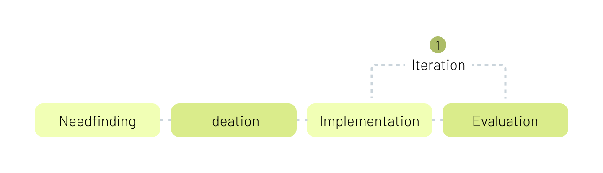
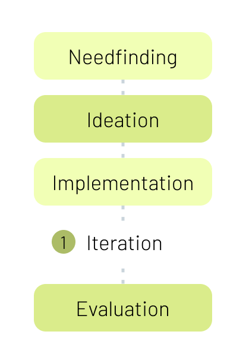
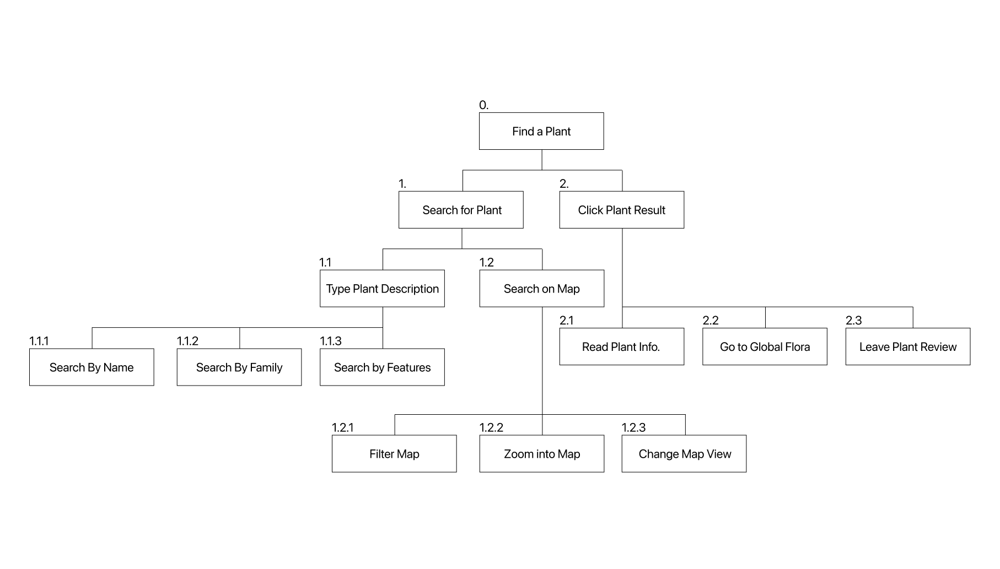
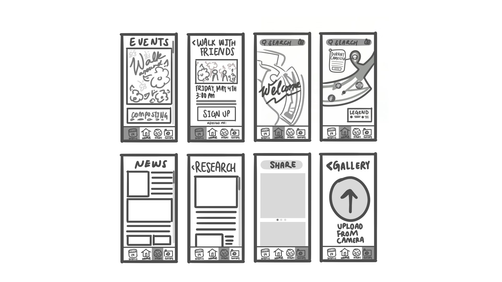
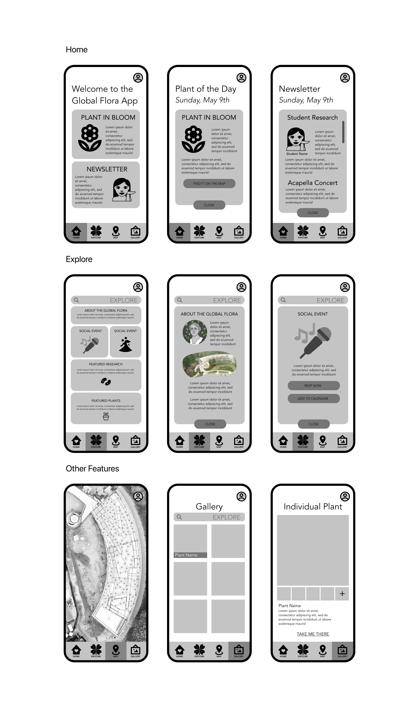
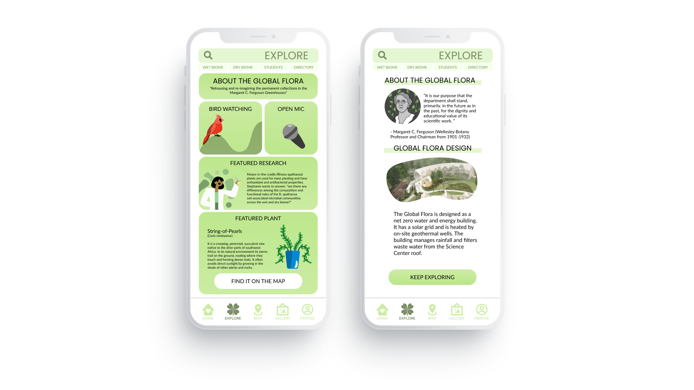

One of the first things I did when I entered college was join an on-campus research lab. The lab I joined was Professor Vanja Klepac-Ceraj’s microbiology lab and I begin my research creating data visualizations in R. After finding my love for design, I started my own independent study and embarked on a journey to make the Global Flora more accessible.
The Problem
The Global Flora is a "laboratory under glass", a fancy way for saying greenhouse, next to Wellesley College's Science Center. Many students and community
members cannot access or locate the Global Flora. Furthermore, the interdisciplinary research is only shared through
scientific posters and conferences.
The Design Process


User Analysis
Personas
Olivia
Goal:
Create art inspired by science
Pain Points:
Olivia is a first year and does not know her way around campus
It feels intimidating to explore the Global Flora alone
Professor Smith
Goal:
Creating lesson plans around the Global Flora
Pain Points:
Learning about student research
Due to the pandemic, Professor Smith has to work in the temporary greenhouses
Task Analysis
Our team developed 3 high-level tasks:
Find a specific plant within the Global Flora
Get updates about the Global Flora and fun events
Learn about the research being conducted

Design Iteration
Paper Prototypes

Wireframes

Final Iteration

The Solution
The Global Flora app is designed to feature on-campus activities and research. With components to highlight plants and blooming flowers, the app encourages users to visit the greenhouse to explore. The application emphasizes different events to engage students and community members with a variety of interests and bring the sciences and humanities together.
Concluding Thoughts
Entering college, I took many courses in the natural sciences and felt a disconnect with students
in the humanities. As I gradually took more art courses, I wanted to share my love for the sciences
and allow my friends to explore with me.